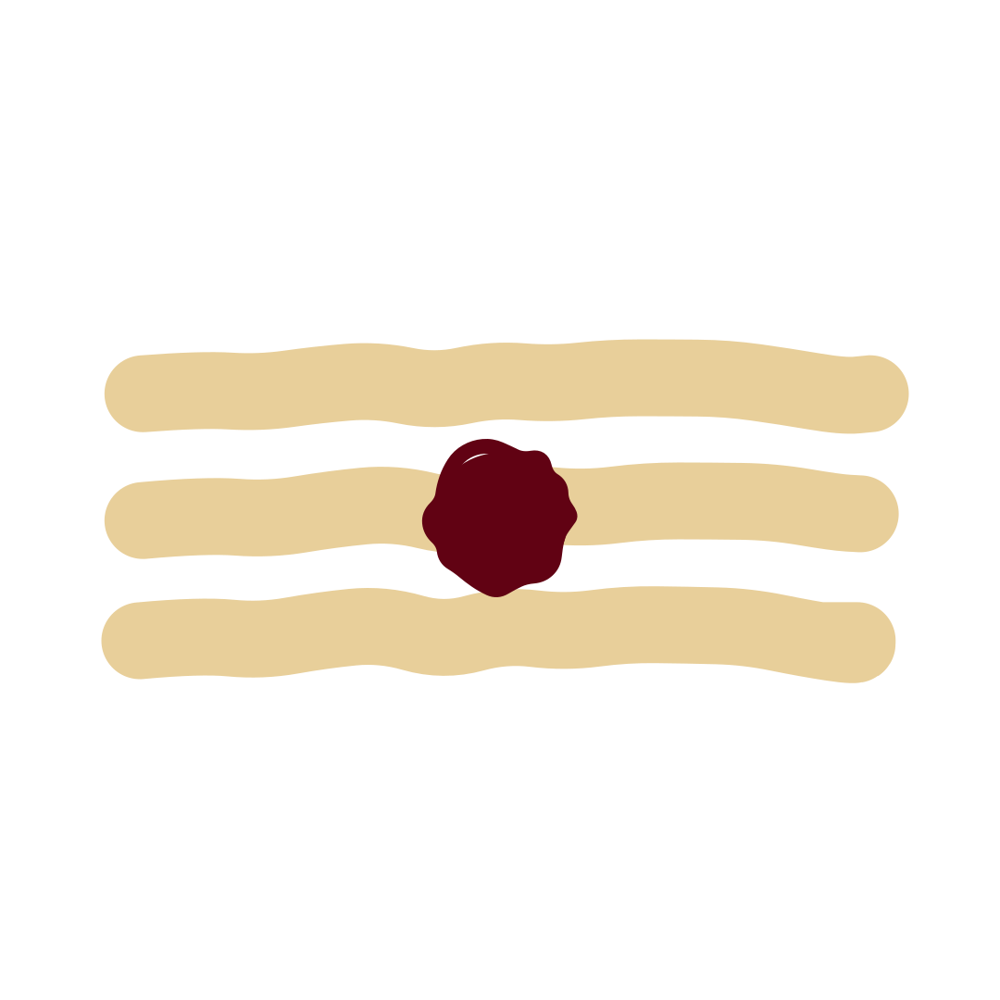

Partha Tamil Tokenizer
Agglutinative BPE tokenizer engine written in Rust
→ -50.2% tokens vs OpenAI o200k · +36.9% vs mBERT

[problem] General subword tokenizers (mBERT, Llama-3) fragment agglutinative Tamil into arbitrary byte shards, tripling sequence length, blowing KV-cache budgets, and corrupting 52% of Latin-1 decodes.
[tradeoff] Writing a custom BPE training engine in Rust gained raw training speed, but required engineering merge tracking, CSR matrix indexing, and Hugging Face export tooling from scratch.
[solution] Constructed a 1,135-token base vocabulary around Tamil conjunct stems, Aho-Corasick parallel merges with Rayon, and CSR indexing. Yields 50.2% fewer tokens than OpenAI o200k, achieving 0.9193 bits/byte on Tamil wiki (+36.9% vs mBERT) with 100% decode fidelity.
- • 50.2% fewer tokens vs OpenAI o200k with +16.5 accuracy gain on Tamil classification
- • Custom BPE merge table built specifically for Tamil morpho-phonemics
- • Aho-Corasick multi-pattern merge tracking with Rayon data parallelism
- • CSR (Compressed Sparse Row) matrix indexing for memory-bounded vocabulary compaction